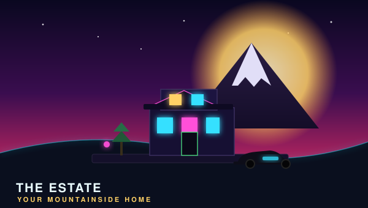
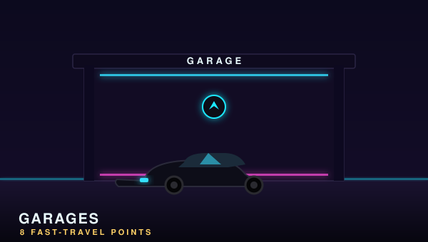

Mei's House
OhtaniWheeler DealerUnlocks car trading at the Autoshow
Auto-unlocks after the tutorial. Grab it first — it opens Autoshow car trading.
Settle in
Forza Horizon 6 scatters 8 player houses across Japan, and each comes with a permanent perk that stays active no matter where you spawn. The headline is The Estate (Yashiki House) — a fully buildable plot you shape with an upgraded EventLab toolset. Houses unlock through the Discover Japan Stamp system (yellow → green → blue → orange → gold). Heads-up: the game also has 8 separate Garages (fast-travel + car-display points) — a different set of "8", not the houses. [RPS, TECH, FH6GUIDE]
Auto-unlocks after the tutorial. Grab it first — it opens Autoshow car trading.
The buildable base. Clear the 19 objects blocking the land, pay 10,000 Cr, and you get a permanent, friends-visitable plot. Up to 12 players can co-create via Horizon Collab.
Best long-term credit investment. VIP players get it for free.
Solid mid-game earner from skill-chain stunts.
Best ROI — the extra garage slot is a genuine bonus.
Best for players who grind Jobs and careers.
Pays for itself after a few high-end car purchases.
Endgame property for convoy players; needs serious time to unlock.


Separate from the 8 houses, Horizon Japan has 8 Garages. These double as free fast-travel points and shareable car-display spaces with customisable, community-downloadable interiors [WIKI].
Don't confuse these with houses — they're fast-travel/car-display points, not owned properties.
 Official Launch Trailer · 550+ cars, one festival, Japan
Official Launch Trailer · 550+ cars, one festival, JapanHorizon Japan
550+ cars, the largest map the series has ever built, and a festival that finally lands in Japan. Here's the straight talk on what to do first, which cars actually matter, and where everything is hidden.
Cover car · 2025 Toyota GR GT PrototypeSee it move
Official trailers and gameplay stills — the fastest way to feel the festival.


Walkthroughs
Step-by-step walkthroughs built from the real game systems and the confirmed FH6 details on this site. Where a count comes from community reporting rather than an official source, it's flagged.
A relaxed path from the Qualifiers to a garage you actually like.
Finishing the Horizon Invitational grants your first (Yellow) Wristband and unlocks the festival, multiplayer and free cars.
Silvia K'S for drift, Celica GT-Four for balance, GMC Jimmy for off-road. All three end up in your garage anyway.
Wheelspins, story events and the Festival Playlist hand out cars fast. Tune your starter instead.
Press Up for photo mode. Landmark shots feed your Collection Journal and earn Discover Japan stamps.
Speed Zones, Danger Signs and Drift Zones pay Super Wheelspins and Skill Points for Car Mastery.
Higher difficulty with assists off can pay up to +125% credits per race — once you can still win.

Classic cars hidden in barns — gated by exploration, not luck.
Explore regions, find landmarks and photograph them. Stamps are what unlock barn rumours.
Once a region's stamps are met, a Barn Find rumour appears. You'll get a map hint rather than an exact pin.
Barns are tucked into the landscape. Roll up slowly and the find triggers automatically.
Found barns go to your garage. 14 are reported across Japan — community-sourced; Wikipedia is silent.

Abandoned cars found only through photo clues — no marker until discovered.
Treasure clues show a snapshot of the location. Study the background — mountains, signs, road shape — to narrow it down.
There is no map marker. Use landmarks and the horizon to triangulate the spot.
Once you're close, the dig prompt appears. 9 treasure cars are reported — community-sourced; Wikipedia is silent.

Make almost any car slide predictably.
Drop rear tire pressure a few PSI for a looser, more forgiving slide.
Increase rear deceleration (and acceleration) so the back steps out on throttle lift and braking.
More positive caster sharpens turn-in and self-centring, which keeps drifts controllable.
RWD with healthy power drifts best; a little ballast at the rear helps rotation. Then practice on the Touge.
Credits fund upgrades and the cars you actually want.
Higher difficulty with assists off can pay up to +125% credits per race — only when you can still win.
Speed Zones, Danger Signs and Drift Zones award Super Wheelspins, which can pay out big credit bundles.
Level-ups, story events and the Festival Playlist all grant spins — save them and open in batches.
Green CT icons on the minimap sell secondhand, fully-tuned cars cheaper than new.
See everything Horizon Japan has to offer.
Explore first to fill the map; you can blink to visited spots later. Stamp every region.
Each area has its own Speed Zones, Danger Signs and Drift Zones — great for accolades and spins.
Drive through the scattered mascots for credits as you go.
Landmark shots complete the Collection Journal and stack Discover Japan stamps.
Your own mountainside base in rural Japan [WIKI].
The Estate becomes available as you progress the festival in rural Japan.
Place buildings and style the grounds to taste — it's your personal festival hub.
Check the My Horizon message center for daily credit payouts from your property.
Live content
The Festival Playlist is the live content backbone of every Forza Horizon. A new season drops each week across a four-week Series; each season hands out exclusive cars, credits and accolades. Track your own progress below — we never list rewards we can't verify.
Event types shown are the standard Forza Horizon Festival Playlist structure. Current-series car rewards are not yet confirmed for FH6 — listed as reward type only, TBC until official data lands.